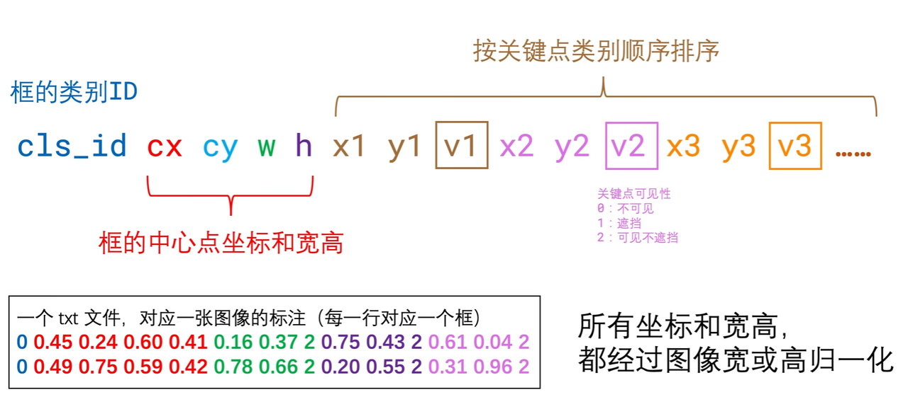
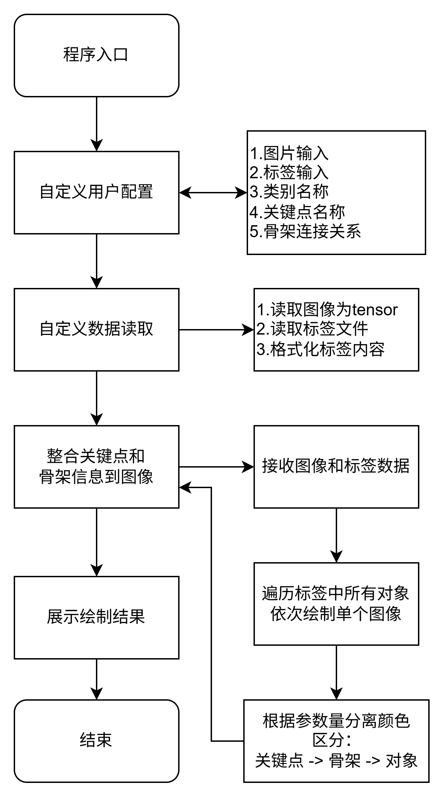

绘制yolo-pose 的关键点-->标签可视化到图像

绘制yolo-pose 的关键点-->标签可视化到图像
风衔花未央1 关键点参数说明
对yolo-pose 的原理不做介绍，主要针对其标签数据做可视化操作
用于训练YOLO姿势模型的数据集标签格式如下：
- 每个图像对应一个文本文件：数据集中的每个图像都有一个对应的文本文件，该文本文件与图像文件同名，扩展名为 “.txt”。
- 每行一个对象：文本文件中的每一行对应于图像中的一个对象实例。
- 每行包含的对象信息：每行包含关于对象实例的以下信息：
- 对象类别索引：一个整数，表示对象的类别（例如，0 代表人，1 代表汽车等）。
- 对象中心坐标：对象的中心 x 和 y 坐标，已归一化到 0 和 1 之间。
- 对象宽度和高度：对象的宽度和高度，已归一化到 0 和 1 之间。
- 对象关键点坐标：对象的关键点坐标，已归一化到 0 和 1 之间。
下面是 “姿势估计 “任务的标签格式示例：
二维关键点格式：
1 | <class-index> <x> <y> <width> <height> <px1> <py1> <px2> <py2> ... <pxn> <pyn> |
带 3D 关键点的格式（包括每个点的可见度）
1 | <class-index> <x> <y> <width> <height> <px1> <py1> <p1-visibility> <px2> <py2> <p2-visibility> <pxn> <pyn> <pn-visibility> |
在这种格式中， <class-index> 是对象的类别索引，
<x> <y> <width> <height> 是 边界框的坐标和
<px1> <py1> <px2> <py2> ... <pxn> <pyn>
是归一化的关键点坐标。可见度通道是可选的，但对注释闭塞的数据集很有用。
带 3D 关键点的格式如图所示

2 辅助信息讲解
针对yolo关键点的数据存储结构，我们需要明确以下辅助信息。
2.1 对象类别名称
即框的目标是什么？
位置：标注信息的第一位
意义：记录对象的索引值
若有多个类别，则设定类别列表，供后续使用
1 | # 类别名称 |
注：两个类别的关键点数量应保持一致
2.2 关键点名称
每个点所指的是什么区域
按照自然顺序记录，标注内容需手动声明
位置：标注信息中去除前4位后，剩余内容皆为关键点数据
以YOLOv8-pose人体姿态估计为例，在COCO数据集上身体的每一个关节具有一个序号，共17个点：
1 | COCO_keypoint_indexes = { |
2.3 骨架链接关系
有了关键点坐标信息，我们可以将它们进行连接展示
最终的结果是每个点至少有一条连线
数据的格式则为两两一组
即：当connections=((9, 7), (7, 5), (5, 6), (6, 8), (8, 10))，绘制了手臂。
当connections=((2, 4), (1, 3), (10, 8), (8, 6), (6, 5), (5, 7), (7, 9), (6, 12), (12, 14), (14, 16), (5, 11), (11, 13), (13, 15))，绘制了身体骨架。
3 代码思路构建
有了参数说明，可以针对性的编写可视化代码
首先要明确使用的绘制工具，当前计划使用opencv的库完成最终的绘制操作。
考虑到训练结束后需要将结果展示，则代码就要有一定的可兼容空间。
那么，图像数据需要转为tensor格式进行操作，以便后续调用修改。
下面整合程序流程：

4 代码详解
以下代码按顺序存放在同一个文件中，命名为：view_yolo_keypoint.py
4.1 导入第三方库
1 | import cv2 |
4.2 自定义配置
- 图片和标签路径：可使用绝对路径和相对路径
1 | # ============================ 用户配置 ============================ |
4.3 数据读取
1 | class ReadimgLabel: # 方便管理零散函数 |
4.4 数据整合方法
1 | class KeyPointDrawer: |
4.5 图像展示
1 | class ShowImage: |
4.6 主函数
1 | if __name__ == '__main__': |